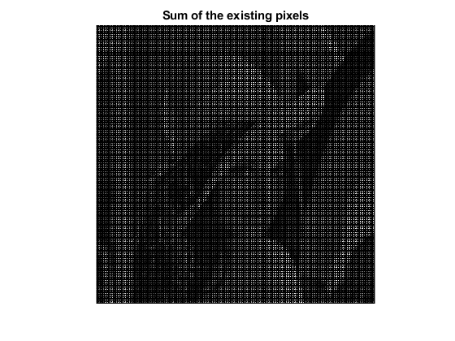
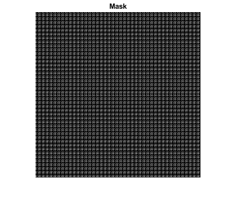
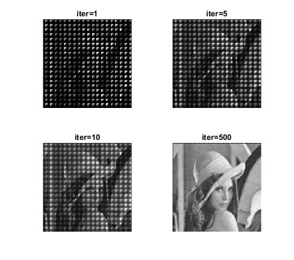
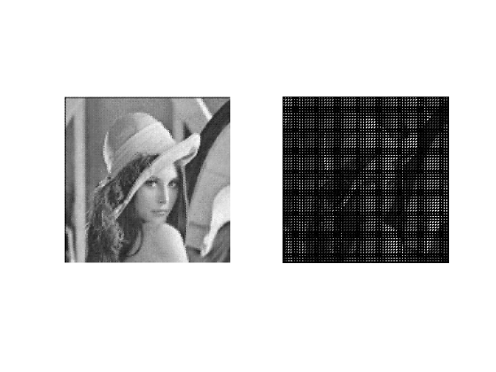
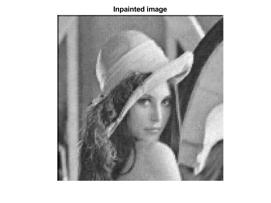
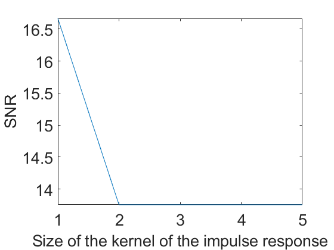

Contents
creating the translated images as before
close all; clear all; addpath('toolbox_signal'); addpath('toolbox_general'); im = imread("lena.png"); im = rgb2gray(im); mask = ones(5,5); imconv = conv2(im, mask, 'same'); max_ = max(max(imconv)); imconv = 255*(imconv/max_); imconv = uint8(imconv);
determining the translation
% this is what we want to find transl_list = [ [2,0] ; [0,2] ;[1,1]]; nb_img = size(transl_list); nb_img = nb_img(1); translated_images = {}; for i=1:nb_img translated_images{i} = imread(['noise_im' int2str(i) '.png']); end % in this part we only have access to the images translated and the one of % reference (here we took the image without translation as reference) ref_img =imresize(imconv,0.25); i=0; trans_list_guessed = zeros(3,2); for index=1:3 image = translated_images{index}; max = 0; for i=0:1:3 for j=0:1:3 transl_im =imtranslate(ref_img,[i,j]); if(corr2(transl_im,image)>max) argmax = [i,j]; max = corr2(transl_im,image); end end end trans_list_guessed(index,:) = argmax; end trans_list_guessed transl_list if(trans_list_guessed == transl_list) disp('WELL GUESSED') end
trans_list_guessed =
1 0
0 1
1 1
transl_list =
2 0
0 2
1 1
INPAINTING
We know use the transition list we guessed before even there are some mistakes to reconstruct an original image. For this purpose we've to fix the size of the image we want to get to do it we use the scaling_factor variable (this is the factor to multiply the size to obtain the final size)
scaling_factor = 4;
size_ = [ size(translated_images{1})*scaling_factor, size(translated_images{1})*scaling_factor]
shape = size(translated_images{1})*scaling_factor;
mask = zeros(shape);
im_sum = zeros(shape);
mask1 = zeros(shape);
mask2 = zeros(shape);
mask3 = zeros(shape);
mask_list = {mask1,mask2,mask3}
im_sum_list ={}
for i=1:nb_img
mask_list{i}(1:scaling_factor : size_(1), 1:scaling_factor:size_(2)) = 1;
mask_list{i} = imtranslate(mask_list{i},trans_list_guessed(i ,:));
im_sum_list{i} = mask_list{i} ;
im_sum_list{i}(im_sum_list{i}>0.5) = translated_images{i};
end
for i=1:nb_img
im_sum = im_sum + double(im_sum_list{i});
end
mask = or(mask_list{1}, or(mask_list{2} , mask_list{3}));
imageplot(im_sum);
title('Sum of the existing pixels')
figure();
imshow(mask);
title('Mask')
imwrite(uint8(im_sum), 'degraded_lena_v2.jpg');
imwrite(mask, 'mask_v2.png');
filled_pixel = (sum(sum(mask)/(shape(1)*shape(1))*100))
size_ =
512 512 512 512
mask_list =
1×3 cell array
{512×512 double} {512×512 double} {512×512 double}
im_sum_list =
0×0 empty cell array
filled_pixel =
18.7500
  filling the holes
y = imread('degraded_lena_v2.jpg'); addpath('toolbox_signal'); addpath('toolbox_general'); mask = imread('mask_v2.png'); % parameters Gamma = mask; Pi = @(f)f.*(1-Gamma) + double(y).*Gamma; Delta = @(f)div(grad(f)); lambda = .1; niter = 500; % algorithm E = []; k = 1; ndisp = [1 5 10 niter]; norm1 = @(f)norm(f(:)); f = double(y); for i=1:niter i; E(i) = norm1(grad(f)); f = Pi( f + lambda*Delta(f) ); if i==ndisp(k) imageplot(f, ['iter=' num2str(i)], 2, 2, k); k = k+1; end end figure; subplot(1,2,1); imageplot(f) subplot(1,2,2); imageplot(double(y)); figure; plot(E); axis('tight'); set_label('Iteration #', 'E'); imwrite(uint8(f), 'new_impainted_lena_v2.jpg') imageplot(f); title("Inpainted image")  
deconvolution
addpath('toolbox_signal'); addpath('toolbox_general'); img = imread('new_impainted_lena_v2.jpg'); deconvoled_im_list ={} SNR_list = [] for s=1:5 % parameters that model the impulse reponse N= shape(1); b=ones(s,s)/s^2; % fft B=fft2(b,N,N); BF=find(abs(B)<1); B(BF)=0.5; hF=ones(N,N)./B; yF = fft2(img); lambda = 0.0790; fL2 = real( ifft2( yF .* hF ./ ( abs(hF).^2 + lambda) ) ); SNR_list(s) = snr(double(im),fL2); end plot(SNR_list); axis('tight'); set_label('Size of the kernel of the impulse response', 'SNR'); SNR_list
deconvoled_im_list =
0×0 empty cell array
SNR_list =
[]
SNR_list =
16.6672 13.7537 13.7537 13.7537 13.7537
